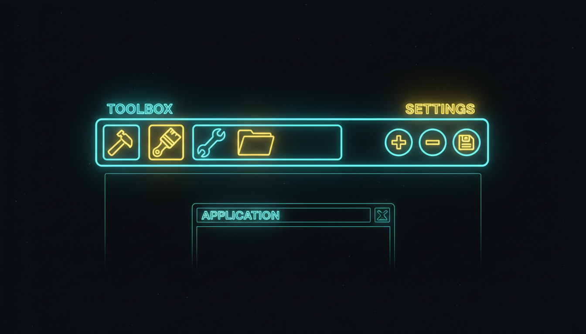

Кнопки, роздільники, комбобокс, статус

// Панель інструментів
ToolStrip^ ts = gcnew ToolStrip();
// Кнопки
ToolStripButton^ btnNew = gcnew ToolStripButton("Новий");
ToolStripButton^ btnOpen = gcnew ToolStripButton("Відкрити");
ToolStripButton^ btnSave = gcnew ToolStripButton("Зберегти");
btnNew->Click += gcnew EventHandler(this, &MyForm::OnNew);
btnOpen->Click += gcnew EventHandler(this, &MyForm::OnOpen);
btnSave->Click += gcnew EventHandler(this, &MyForm::OnSave);
ts->Items->Add(btnNew);
ts->Items->Add(btnOpen);
ts->Items->Add(btnSave);
ts->Items->Add(gcnew ToolStripSeparator());
// Комбобокс на панелі
ToolStripComboBox^ cmbZoom = gcnew ToolStripComboBox();
cmbZoom->Items->AddRange(gcnew array<String^> {"50%", "75%", "100%", "150%", "200%"});
cmbZoom->SelectedIndex = 2;
cmbZoom->Width = 80;
ts->Items->Add(cmbZoom);
this->Controls->Add(ts);